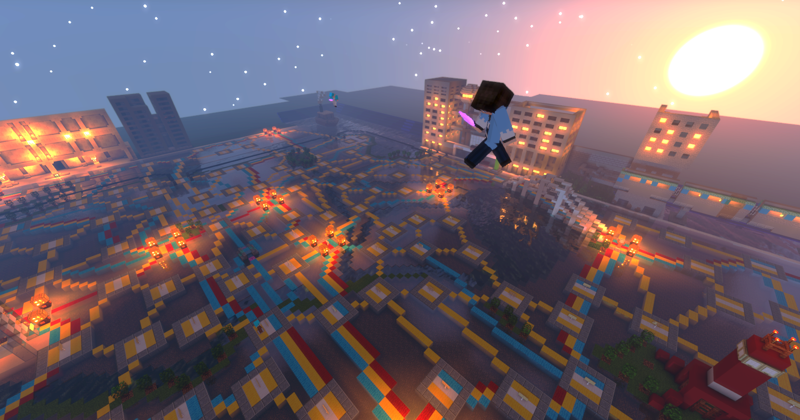
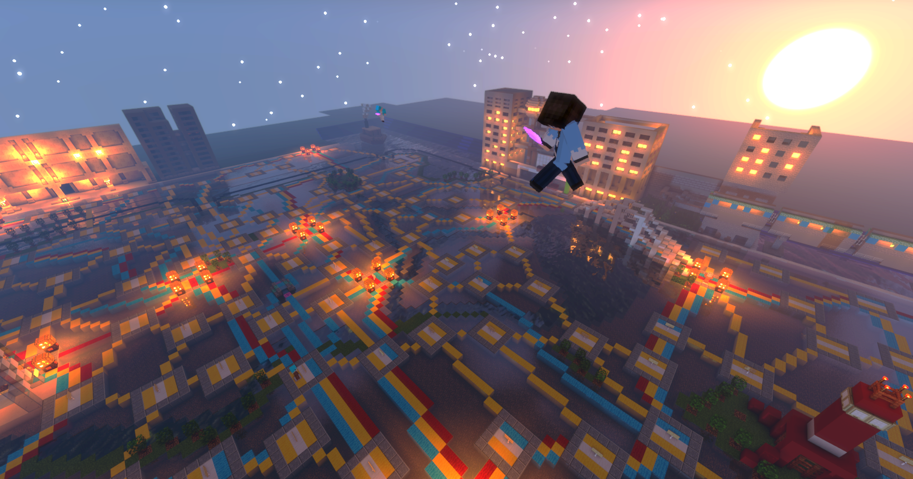

畳サーバー鯖主:たっきーがTwitchでの配信を始めました。
PvP第1マップ「Basic」がリリースされました。
当時から視聴者参加型でした。視聴者と一緒にマップを制作しました。
その結果、逃走中第1マップ「第一」がリリースされました。


当時は統合版でやっていたので、スマホからの参加者が多く、早めに50人を達成しました。
PvP第2マップ「前線基地」がリリースされました。
PvP「制圧戦」「大将戦」がリリースされました。
この頃非常に勢いがあり、マップが相次いでリリースされました。
完成マップ一覧
・逃走中第2マップ「観覧車」
・PvP第3マップ「鉱山」
・PvP第4マップ「石レンガ」
・PvP第5マップ「森のやぐら」
・PvP第6マップ「ネザー要塞」


現在のスタイル"JEでもBEでも遊べるマイクラサーバー"はこの頃から誕生しました。
またサバイバルに力を入れ始め、お金の概念が入ったサバイバル鯖が始まりました。
新企画としてマイクラ人狼が誕生しました。
まだバグもあり、マップも逃走中第1マップ「第一」を代用していました。
またこの頃、PvP「殲滅戦」がリリースされました。


新企画としてマイクラ鬼ごっこが誕生しました。
入れ替わり鬼・氷鬼・増え鬼の3種類があります。
マップは当時リリースされていたPvPの6マップを代用していました。
実は畳サーバーという名称に生まれ変わったのは2021年8月のことです。
またこの頃、人狼第1マップ「空港」,
人狼第2マップ「森林公園」が相次いでリリースされました。


PvPが大型アップデート!
「生存戦」「スパイ戦」「銃撃戦(殲滅)」が追加されました。
さらに新企画「村人防衛戦」がリリースされました。


生活鯖にハロウィンワールドが誕生しました。
限定レアアイテム「黄金のジャック・オ・ランタン」が思いのほか出回ってレア度が下がってしまいました(汗)
また、釣り・草刈り・葉っぱ切りで特殊アイテムがもらえるようになりました。釣りからはあのガチャ券も…。
当鯖初の配布イベントにもなった「マイクラスコットランドヤード」は半年以上前からプロジェクトが動いていました。興味を持っていただけましたら是非こちらからご確認ください！
また鬼ごっこ第1マップ「山脈」がリリースされました。


生活鯖とイベント両方の開発を継続することが困難と判断し、苦渋の決断で生活鯖から撤退しました。
>かわりにイベント開発に専念するようになりました。
この頃以下のマップが追加されました。
・逃走中第3マップ「キャンプ場」
・PvP第9マップ「渓谷」
・PvP第10マップ「ブロック」


今まで制作してきたイベントの修正やアップデートを中心に進めました。
PvP「銃撃戦(制圧)」「銃撃戦(大将)」が追加されました。
この頃以下のマップが追加されました。
・PvP第11マップ「空島」
・鬼ごっこ第4マップ「団地」
・ロビー第1アスレ「難関アスレ」
かつての単発企画"サバイバルPvP"が約10か月ぶりに定期開催イベントとして復活!
最新バージョンのサバイバルを楽しむ機会にもなりました。
また、PvP「カウント戦」がリリースされました。
>さらにこの頃以下のマップが追加されました。
・PvP第12マップ「球体」
・ロビー第2アスレ「1000mアスレ」


今まで続けてきた鯖主:たっきーの20時定期配信が不可能になり、アクティブな鯖民が半分以上いなくなりました。
なんとか体勢を立て直すため、内部メンバー「畳運営」の再構成や配信以外のアプローチ（動画・当ホームページなど)に力を入れる等でなんとか維持を図ることにしました。
ロビー第3アスレ「原木タワー」が追加されました。
人狼イベントの大型アップデート「妖狐」「バカ」が追加されました！
更に8か月ぶりとなるマップ追加で復活を目指しました!
この頃以下のマップが追加されました。
・人狼第3マップ「城下町」
・鬼ごっこ第4マップ「子供部屋」
・ロビー第4アスレ「石タワー」


今まで当鯖の宣伝ツールはTwitch、Twitterがほとんどでした。
そこで新しくYouTubeアカウントを開設し、「畳サーバー予告映像」を公開!
さらにこの頃から切り抜き動画の投稿を開始しました。
「村人防衛戦リメイク」
「ウールバトルリメイク」
「マイクラスコットランドヤード配布」、そして
「生活鯖復活」など大躍進！
数か月前の畳消滅のピンチを払拭するかのようなリリースの連続でした。

 
